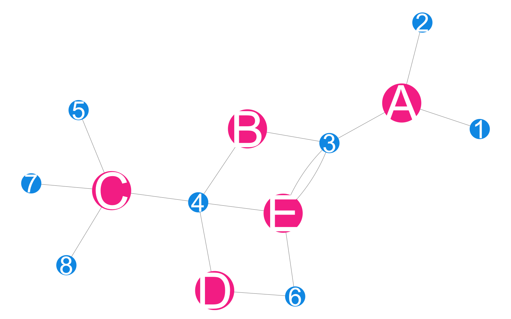
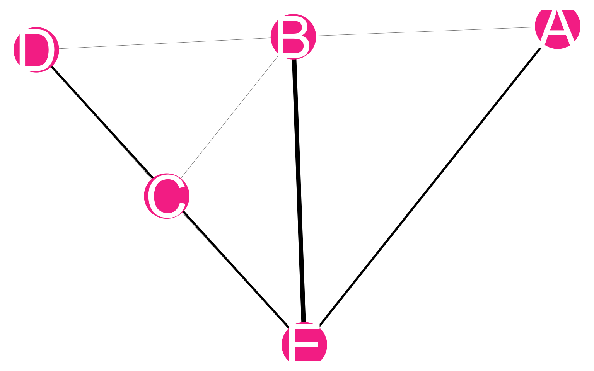

Appendix A — Methods
A.1 Data structure
A.1.1 MPX NYC spatial participant network
The MPX NYC spatial participant data network is a network object that contains all collected data. In this network, nodes comprise of community districts and survey participants. Edges can only exist between a person and a communtiy district - they indicate that the person either lives in or has a contact place in that community district. In Figure A.1, participant nodes are blue and community district nodes are pink.
| name | type |
|---|---|
| 1 | person |
| 2 | person |
| 3 | person |
| 4 | person |
| 5 | person |
| 6 | person |
| 7 | person |
| 8 | person |
| A | community_district |
| B | community_district |
| C | community_district |
| D | community_district |
| E | community_district |
| from | to |
|---|---|
| 1 | A |
| 2 | A |
| 3 | A |
| 3 | B |
| 3 | E |
| 3 | E |
| 4 | B |
| 4 | C |
| 4 | D |
| 4 | E |
| 5 | C |
| 6 | D |
| 6 | E |
| 7 | C |
| 8 | C |
More formally, we define the MPX NYC spatial participant graph as
\[ G(N, \psi) \text{ where } \psi:N\times N \rightarrow \mathbb{N}_0 \]
\(N\) is a set containing node indices and \(\psi\) (the adjacency function for \(G\)) is a mapping from each possible pair of nodes to the set of non-negative integers. \(\psi(a,b) = 0\) when there is no edge between distinct nodes \(a,b \in N\) and \(\psi(a,b) > 0\) if there is. By definition, a node cannot have an edge with itself. i.e. \(\psi(a,a) = 0\) \(\forall a \in N\).
In the MPX NYC spatial participant graph, nodes can be partitioned into a set of study participants \(N_p\) and a set of community districts \(N_c\). i.e.
\[ N_p \cup N_c = N \text{ and } N_p \cap N_c = \emptyset \]
Each individual participant can have a relation with any number of community districts, but not with another participant. Similarly, each community district can have a relation with multiple participants, but not with another community district. i.e.:
\[ \psi(a,b) > 0 \Rightarrow a\in N_p, b\in N_c \] Finally, we define \(M\) as a \(q \times r\) weighted adjacency matrix for \(G\) where \(q = |N_p|\) and \(r = |N_c|\). The \(ij^{th}\) entry of \(M\) is
\[ m^{ij} = \psi(i,j) \]
In this mathematical description, we assume that there can only be one edge between a pair of nodes. In the MPX NYC data, it is possible for there to be more than one relation between a specific pair of nodes. We bridge this gap by assigning the count of relations in MPX NYC study data as an edge weight in the mathematical description. i.e In the case where participant \(a \in N_p\) has \(r\) relations with community district \(c \in N_c\), there is only one edge \((a,c)\) in \(G\) and the weight of that edge equals the count of relations (\(\psi(a,c) = r\)).
The MPX NYC spatial participant graph meets the definition for a bipartite graph. This allows us to easily derive two related graphs - the bipartite projection onto participant nodes \(G_p(N_p,\psi_p)\), and the bipartite projection onto community district nodes \(G_c(N_c,\psi_c)\). The former graph is used to represent the MPX NYC participant network, and the latter is used to represent the MPX NYC community district network. Both are defined below.
A.1.2 MPX NYC participant network
The MPX NYC participant network has participants as nodes. A pair of nodes is connected by a weighted edge if each of the individuals represented by the nodes has at least one contact venue or residence in the same, shared community district. The weight of the edge is given by the count of community districts the pair of nodes have in common. By definition, an edge of weight \(0\) is equivalent to the absence of an edge.

| name | type |
|---|---|
| 1 | person |
| 2 | person |
| 3 | person |
| 4 | person |
| 5 | person |
| 6 | person |
| 7 | person |
| 8 | person |
| from | to | weight |
|---|---|---|
| 1 | 2 | 1 |
| 1 | 3 | 1 |
| 2 | 3 | 1 |
| 3 | 4 | 3 |
| 3 | 6 | 2 |
| 4 | 5 | 1 |
| 4 | 6 | 2 |
| 4 | 7 | 1 |
| 4 | 8 | 1 |
| 5 | 7 | 1 |
| 5 | 8 | 1 |
| 7 | 8 | 1 |
More formally, we define the MPX NYC participant graph as
\[ G_p(N_p, \psi_p) \text{ where } \psi_p:N_p\times N_p \rightarrow \mathbb{N}_0 \]
\(N_p\) is a set containing node indices for participant nodes and \(\psi_p\) is a mapping from each possible pair of participants to the set of non-negative integers. \(\psi_p(a,b) = 0\) when there is no edge between distinct participants \(a\) and \(b\) and \(\psi_p(a,b) > 0\) if there is. By definition, a node cannot have a tie with itself. i.e. \(\psi_p(a,a) = 0\) \(\forall a \in N_p\).
\(G_p(N_p, \psi_p)\) can be derived from \(G\) by taking the product of the \(q \times r\) adjacency matrix \(M\) with its transpose:
\[ M_p = MM^T \]
The result is a \(q \times q\) adjacency matrix \(M_p\) whose entries \(m_p^{ij}\) are used to define \(\psi_p\):
\[ \psi_p(i,j) = m_p^{ij} \]
A.1.3 MPX NYC community district network
The MPX NYC community district network has community districts as nodes. A pair of community districts is connected by a weighted edge when at least one participant has a contact venue or residence in both community districts. The weight is the count of participants which are shared by the two community districts.

| name | type |
|---|---|
| A | community_district |
| B | community_district |
| C | community_district |
| D | community_district |
| E | community_district |
| from | to | weight |
|---|---|---|
| A | B | 1 |
| A | E | 2 |
| B | C | 1 |
| B | D | 1 |
| B | E | 3 |
| C | D | 1 |
| C | E | 1 |
| D | E | 2 |
More formally, we define the MPX NYC community district graph as
\[ G_c(N_c, \psi_c) \text{ where } \psi_c:N_c\times N_c \rightarrow \mathbb{N}_0 \]
where \(N_c\) is a set containing node indices for community district nodes and \(\psi_c\) is a mapping from each possible pair of community districts to the set of non-negative integers. \(\psi_c(a,b) = 0\) when there is no edge between community districts \(a\) and \(b\) and \(\psi_c(a,b) > 0\) if there is. By definition, a node cannot have a tie with itself. i.e. \(\psi_c(a,a) = 0\) \(\forall a \in N_c\).
\(G_c(N_c, \psi_c)\) can be derived from \(G\) by taking the product of the \(r \times q\) matrix \(M^T\) with its transpose:
\[ M_c = M^TM \]
The result is a \(r \times r\) matrix \(M_c\), whose entries \(m^{ij}_c\) are used to define \(\psi_c\):
\[ \psi_c(i,j) = m_c^{ij} \]
A.2 Network measures
In this section, we describe network measures that are both useful statistics to interpret in describing MPX NYC data and useful intermediate steps in other measures we constructed. We divide the measures into those that are related to egocentric networks, and those related to the overall structure of the network.
A.2.1 Egocentric measures
We defined four measures related to node degree which offer a useful interpretation of MPX NYC data: participant social reach (\(R_i\)), participant spatial reach (\(S_i\)), community district social reach (\(r_j\)), and community district spatial reach (\(s_j\)).
We further defined for each of these measures, a measure in which we count only the connections to nodes which are included in some defined subset \(A \subset N\) of nodes. We thus define conditional participant social reach (\(R_i|A\)), conditional participant spatial reach (\(S_i|A\)), conditional community district social reach (\(r_j|A\)), and conditional community district spatial reach (\(s_j|A\)).
A.2.1.2 Participant spatial reach
Participant spatial reach is defined as the number of connections the focal participant has with community districts. It is defined as the weighted node degree in the MPX NYC spatial participant network. For \(i \in N_p\)
\[ S_i = \sum_{j \in N_c}{\psi (i,j)} \]
\[ S_i|A = \sum_{j \in N_c}{\psi (i,j)I_{x \in A}(x = j)} \]
A.2.1.4 Community district spatial reach
Community district spatial reach is defined as the number of connections the focal community district has with other community districts through shared participants. For community districts \(c\) and \(d\), by “shared participants”, we mean the set
\[ \{p : \psi(p,c) > 0 \text{ and } \psi(p, d) > 0 \, \text{ for } p \in N_p \} \] Community district spatial reach is defined as the weighted node degree in the MPX NYC community district network. For \(j \in N_c\)
\[ s_j = \sum_{i \in N_c}{\psi_c (i,j)} \]
\[ s_j|A = \sum_{i \in N_c}{\psi_c (i,j)I_{x \in A}(x = i)} \]
A.2.2 Sociocentric measures
A.2.2.1 Spatial mixing coefficient
The MPX NYC participant network can also be used to analyze the pattern of connection across different demographic groups. We did this using the spatial mixing coefficient, which we motivate and define below.
Say there are three types of retired university professors in Boston - A) those who choose to live and socialize in neighborhoods with universities (where they can meet old colleagues and students); B) those who choose to live and socialize away from former colleagues and students; and C) those who choose neighborhoods without regard for university life. And say the proportion of people who are under 25 years of age in Boston is \(20\%\) and that the majority of this group are college students. People who are under 25 years of age would be over-represented in neighborhoods with college campuses and residences, and under-represented in those without.
To understand what kind of retired professor a particular person is, you could ask her of all the peopple she encountered in the past 12 months, what proportion were under \(25\). If she is of type C, we would expect her answer to be about \(20\%\). If she avoids universities (i.e. is of type B), the proportion would be lower than \(20\%\) and if she seeks them out (i.e. type A), her answer would be greater than \(20\%\).
In the motivating example, we were soliciting the retired professor’s preference for the subgroup: under 25. We were then mentally comparing it with the prevalence of that subgroup (\(20\%\)). The spatial mixing coefficient makes this comparison by dividing preference by prevalence and subtracting 1. It is zero when contact venues and residences for a given subgroup are distributed in space independently of another; positive if members of the former subgroup tend to share community districts with those of the latter; and negative if they tend to not share community districts.
The spatial mixing coefficient is related to notions in social network analysis and compartmental infectious disease modelling. The coefficient of a given sub-group for that same subgroup indicates homophily when it is positive, random mixing when it is zero, and heterophily when it is negative. It goes further by showing, in the case of heterophily, which subgroups members of the focal subgroup tend to be connected with. This is useful in early outbreak investigations as it allows the analyst to understand the potential path of a new pathogen across the population of interest. e.g. where there is strong homophily in the a network like the MPX NYC participant network, a new pathogen will tend to stay within the subgroup it first affected. If there is strong heterophily, on the other hand, the pathogen will tend to disseminate across groups favored by the first subgroup it affected.
We define preference of group A for group B (\(\Phi(A,B)\)) as the average proportion of alters from group B among egos from group A.
\[ \Phi(A,B) = \frac{1}{|A|}\sum_{i \in A}{\frac{ R_i | B}{R_i}} \]
To understand whether preference of a specific group by another group is higher or lower than we would expect if ego’s chose alters randomly, we compare preference for B to the prevalence of group B:
\[ \frac{|B|}{|N_p|} \]
The spatial mixing coefficient is the ratio of preference to prevalence minus one:
\[ \phi(A,B) = \frac{|N_p|}{|B|} \Phi(A,B) - 1 \]
A.2.2.2 Proportion in largest connected component
In a given network, a connected component is a subset of nodes such that each node in the subset is reachable from any other node in the subset, and such that there are no nodes outside the subset which are reachable from a node inside it. By reachable, we mean possible to reach by tracing a path from one node to another over existing network ties.
In the MPX NYC participant network, it is possible to uniquely partition the node set \(N_p\) into connected components. This follows from the facts that connected components form non-overlapping subsets of \(N_p\) and that it is possible to write \(N_p\) as a union of subsets \(C_k\) which are each connected components.
\[ N = \bigcup_{k = 1}^{K}{C_k} \]
We define the proportion in the largest connected component as:
\[ \theta_p = \frac{\max_k{|C_k|}}{|N_p|} \]
A.3 Outbreak intervention analysis
Consider a sequence of graphs \(G^{(k)}\) for \(k \in \mathbb{N}_0\) constructed so that
\[ G^{(0)}(N^{(0)}, \psi^{(0)}) = G(N, \psi). \]
and so that given \(G^{(k)}\), we calculate \(G^{(k+1)}(N^{(k+1)}, \psi^{(k+1)})\) by selecting a community district \(n^{(k+1)}\) along with all participants connected with it
\[ H^{(k+1)} = \{s \in N^{(k)}_p : \psi^{(k)}(s,n^{(k+1)}) > 0 \} \]
and removing them from the node set
\[ N^{(k+1)} = N^{(k)} \backslash \{ H^{(k+1)} \cup \{ n^{(k+1)} \} \} \] The updated adjacency function \(\psi^{(k+1)}\) preserves all the edges represented by \(\psi^{(k)}\) for terminal nodes included in \(N^{(k+1)}\):
\[ \psi^{(k+1)}(a,b) = \psi^{(k)}(a,b), \forall a,b \in N^{(k+1)} \]
Note: All measures defined in the previous sections can be calculated based on the updated graph \(G^{(k)}\). We indicate this case by adding a superscript with index number \(k\) for the particular measure. e.g. We can define \(s_j^{(k)}|A\) relative to graph \(G^{(k)}\) just as \(s_j|A\) is defined relative to graph \(G\).
A.3.0.1 Intervention strategies
We examined two approaches for selecting a community district to immunize, corresponding to different intervention priorities. In the first, we select the next community district to immunize to maximize the number of people to be immunized. In the second, we select the next community district with the goal of minimizing the likelihood of contagion between community districts.
i.e. in the contact-neutralizing strategy \(n^{(k+1)}\) satisfies:
\[ r_{n^{(k+1)}} = \max_{j \in N_c^{(k)}}{r_j^{(k)}} \]
and in the movement-neutralizing strategy \(n^{(k+1)}\) satisfies:
\[ s_{n^{(k+1)}} = \max_{j \in N_c^{(k)}}{s_j^{(k)}} \]
A.3.0.2 Intervention outcomes
spatial efficiency
Intervention coverage for community district \(n^{(k)}\), the \(k^{th}\) community district to be immunized, is defined as:
\[ \frac{ r_{n^{(k)}}^{(k-1)}}{ |N_p|} \]
The cumulative intervention coverage after immunizing \(k\) community districts, therefore, is:
\[ \sum_{t = 1}^k{\frac{ r_{n^{(t)}}^{(t-1)}}{ |N_p|}} \]
Social network impact
The cumulative social network impact of immunizing \(k\) community districts is measured in terms of the size of the largest of the connected components \(C_t^{(k)}\) of the \(G_p^{(k)}\) network as a proportion of the total number of participants.
\[ \frac{\max_t{C^{(k)}_{t}}}{|N_p|} \]